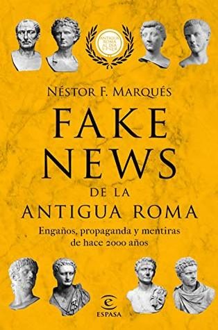

Fake news de la antigua Roma: Engaños, propaganda y mentiras de hace 2000 años
Néstor F. Marqués González
Reseña por Jorge I. Zuluaga

Fecha de reseña: 2019-12-27
Ver reseña en GoodReads (necesita cuenta)
¿Sabías que solo había un puñado de nombres usados en Roma por los hombres: Cayo, Lucio, Publio, Marco, Tiberio, Quinto, Sexto, Octavio, Décimo, etcétera, y que, por lo tanto, Julio César en realidad se llamaba Cayo y Julio era su apellido? ¿Sabías que Cayo Julio César usaba permanentemente la corona de olivo para ocultar una incipiente calvicie? ¿Sabías que al Jesús «histórico», además de los evangelios, lo mencionan al menos tres cronistas de la época: Flavio Josefo, Tácito y Suetonio? ¿Sabías que Livia no fue tan mala y que Nerón nunca nombró senador a su caballo? ¿Sabías que Cómodo, el emperador malvado de la película Gladiador, no mató a su padre Marco Aurelio, pero sí luchó como gladiador en el Coliseo, aunque solo con espadas de madera? ¿Sabías que Constantino no soñó realmente con una cruz y que adoraba al Sol y no a Cristo? ¿Sabías que las mujeres nobles en Roma tenían nombres más simples que los hombres y muchas se llamaban Julia? ¿Sabías que Jesús nació realmente en el año 5 a. C.? ¿Sabías que el henoteísmo (el tipo de religión que se practicó en Roma en su período final) es el culto a muchos dioses, pero a uno principal (Helios-Apolo, Dioniso-Baco, Sol Invicto, etc.)? ¿Sabías que la persecución romana de los cristianos nunca fue tan grande como la narran los cronistas cristianos? ¿Sabías que Bruto no era hijo de Cayo Julio César? ¿Sabías que las «orgías» eran originalmente el equivalente a las «eucaristías» cristianas, pero en la religión de Baco-Dioniso, que fue la primera en ser condenada y perseguida en Roma más de un siglo antes del surgimiento del cristianismo? ¿Sabías que el cristianismo fue una «invención» de Pablo de Tarso y que los autores de los evangelios realmente no conocieron a Jesús (no eran los apóstoles)? ¿Sabías que no había homosexualidad o heterosexualidad en Roma y que sus ideas del género eran totalmente diferentes a las nuestras? ¿Sabías que el verdadero título real en Roma era el de «princeps» y no el de «emperador»? ¿Sabías que Cayo Julio César no fue un emperador, sino un dictador? ¿Sabías que «emperador» o «imperator» era un título militar y que el primero en llevarlo fue Cayo Octavio Turino (o Augusto)? ¿Sabías que los meses de julio y agosto se deben a Julio César y a Octaviano «Augusto», y que a septiembre le iban a poner, siguiendo esa tradición, «Tiberius», pero el Senado romano no lo aprobó? ¿Sabías que Claudio (Tiberio Claudio Nerón) no era tonto, pero se hacía pasar por tal para no ser un objetivo militar de su familia? ¿Sabías que el mismo Claudio consiguió que el latín se convirtiera en la *lingua franca* del Imperio romano por encima del griego, que lo fue hasta su regencia? ¿Sabías que Nerón (Tiberio Claudio Nerón) inspiró la imagen del Anticristo (la Bestia) del Apocalipsis? ¿Sabías que «Calígula» era el apodo del emperador Cayo Julio César Augusto Germánico y que significaba «botitas» porque, cuando era pequeño, acompañaba a su padre (Germánico) a los campos de batalla? ¿Sabías que el cristianismo se convirtió en la religión oficial del Estado romano durante el reinado de Teodosio (379-395 d. C.) y no durante el de Constantino? ¿Sabías que nuestro año 1 d. C. era el año 753 para los romanos (753 años después de la fundación mítica de la ciudad)? ¿Sabías que fue Tácito, historiador romano, quien para ensalzar al emperador Trajano convirtió a todos los emperadores precedentes en viciosos malvados (como los retrataría posteriormente la literatura y el cine) sin llegar a serlo todos en los extremos descritos por él?
Si todos o la mayoría de estos datos le son ajenos (como lo eran para mí), encontrarás este libro increíblemente ilustrativo y posiblemente muy entretenido.
El título del libro es un poco engañoso y el contenido es muy distinto de las expectativas que crea (una colección de anécdotas que aclaran leyendas falsas sobre los romanos). Si bien se pueden encontrar en él, efectivamente, aclaraciones de algunos mitos y leyendas creados o ampliamente difundidos por la literatura y el cine, en realidad el texto es un resumen (muy agradable para quienes disfrutamos de la historiografía) de la historia de Roma desde antes de su fundación (con la salida de Eneas de Troya) hasta poco antes de su decadencia y caída.
El libro está muy bien escrito (es agradable de leer y el lenguaje está al alcance del lego, como yo mismo me declaro en estas materias). Como un detalle muy interesante, muchas de las citas a los textos de historiadores y cronistas romanos contenidas en él están tanto en el idioma original (principalmente latín, pero también en griego) como en español. Esto hace que quienes además disfrutamos acercándonos o conociendo las lenguas clásicas podamos deleitarnos comparando los textos en los dos idiomas.
La sección dedicada al surgimiento del cristianismo es muy buena, especialmente para quienes, por la tradición, hemos sido (mal) iniciados en su historia. Hay en el texto interesantes aclaraciones sobre el surgimiento de esta secta del judaísmo y su ascensión hasta convertirse en la religión oficial del Imperio romano, pasando por la historia de Jesús y la posterior elaboración de los evangelios oficiales.
A quien lo vaya a leer, le recomiendo sacar una copia de los diagramas y mapas al final del libro (genealogía de las dinastías de los emperadores y mapa de Roma) para tenerlos a la mano mientras se lee el texto.
Considero que el libro es un excelente punto de partida para empezar a conocer la emocionante historia del imperio que, en 1000 años, sentó las bases lingüísticas, sociales y religiosas de la sociedad occidental moderna.